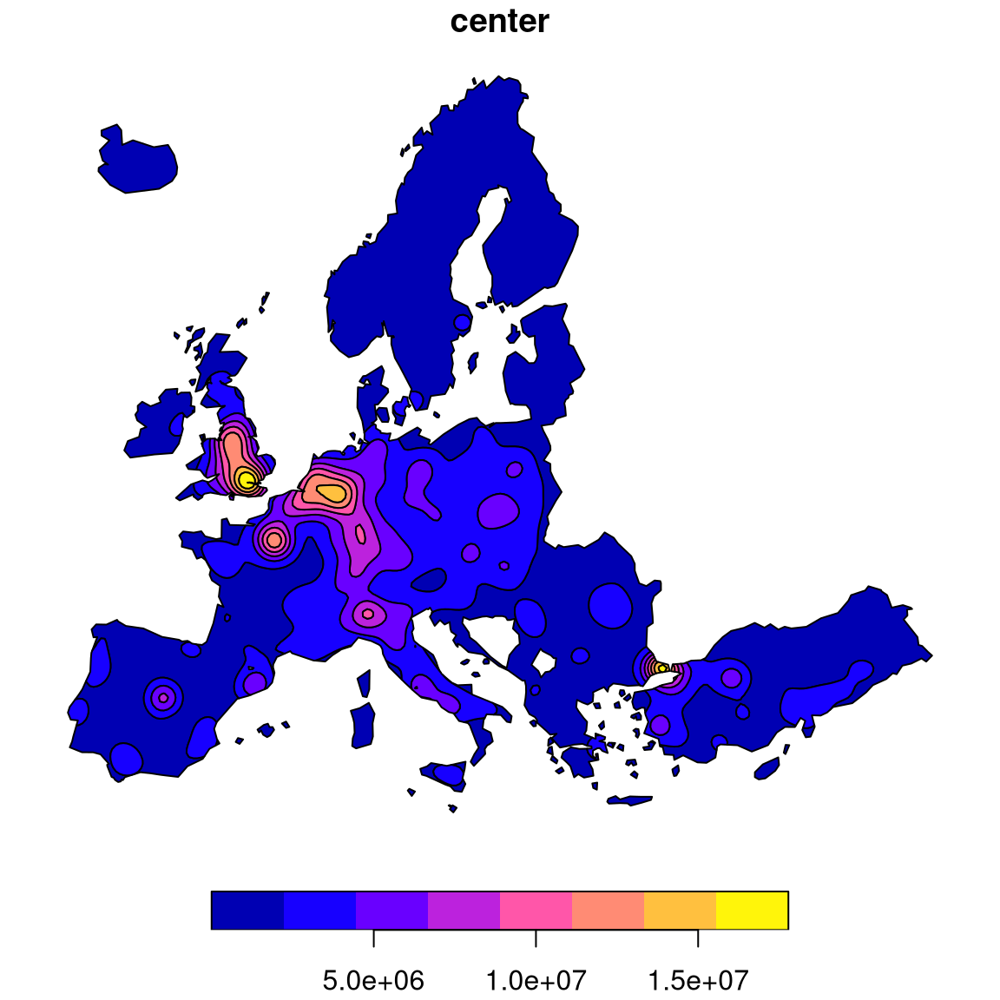

This function computes the potential model with a cutoff distance and parallel computation.
Arguments
- x
an sf object (POINT), the set of known observations to estimate the potentials from.
- y
an sf object (POINT), the set of unknown units for which the function computes the estimates.
- var
names of the variables in
xfrom which potentials are computed. Quantitative variables with no negative values.- fun
spatial interaction function. Options are "p" (pareto, power law) or "e" (exponential). For pareto the interaction is defined as: (1 + alpha * mDistance) ^ (-beta). For "exponential" the interaction is defined as: exp(- alpha * mDistance ^ beta). The alpha parameter is computed from parameters given by the user (
betaandspan).- span
distance where the density of probability of the spatial interaction function equals 0.5.
- beta
impedance factor for the spatial interaction function.
- limit
maximum distance used to retrieve
xpoints, in map units.- ncl
number of clusters.
nclis set toparallel::detectCores() - 1by default.- size
mcpotentialsplitsyin smaller chunks and dispatches the computation innclcores,sizeindicates the size of each chunks.
Value
If only one variable is computed a vector is returned, if more than one variable is computed a matrix is returned.
Examples
# \donttest{
library(sf)
g <- create_grid(x = n3_poly, res = 20000)
pot <- mcpotential(
x = n3_pt, y = g, var = "POP19",
fun = "e", span = 75000, beta = 2,
limit = 300000,
ncl = 2
)
g$OUTPUT <- pot
equipot <- equipotential(g, var = "OUTPUT", mask = n3_poly)
plot(equipot["center"])

# }